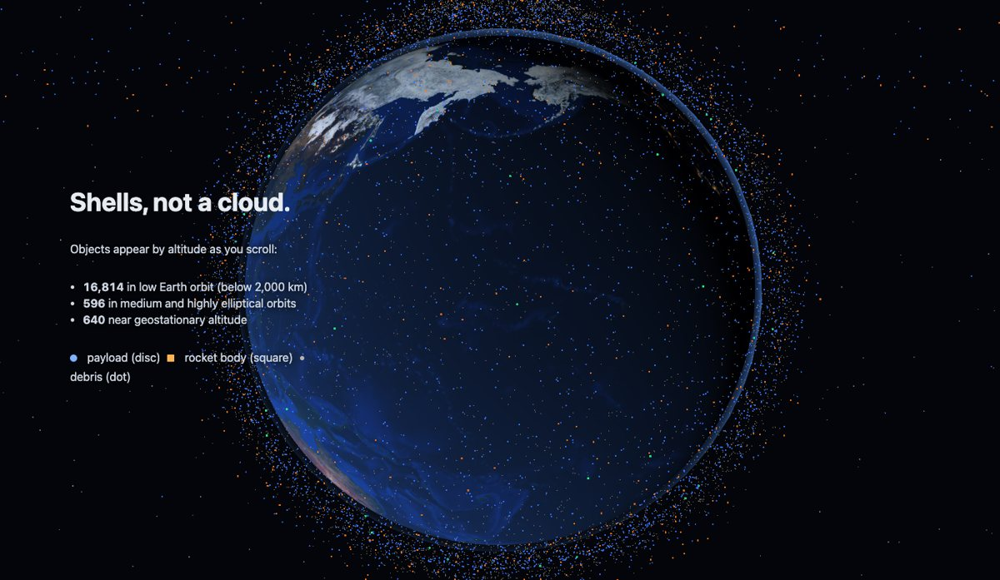
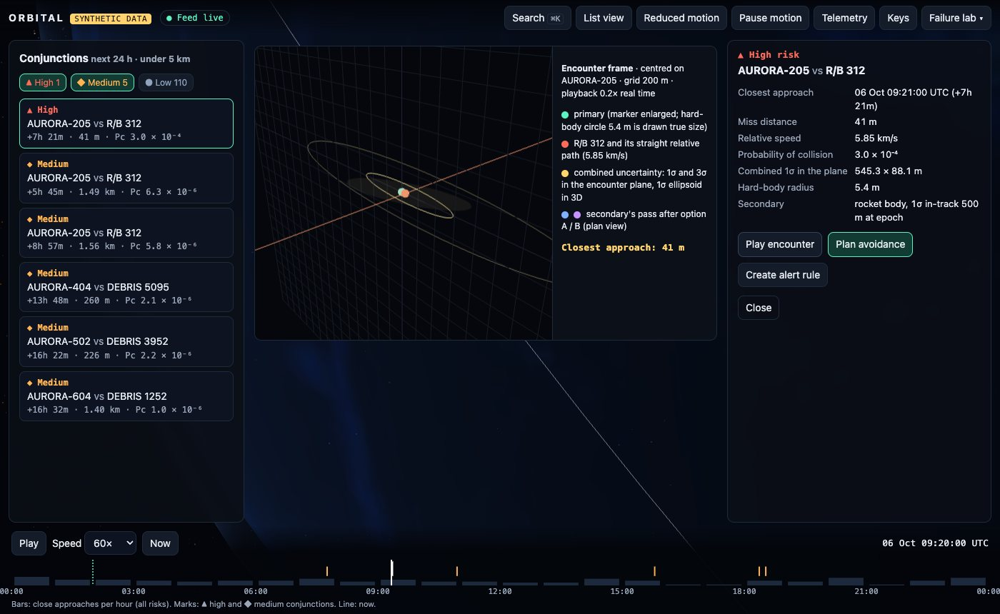
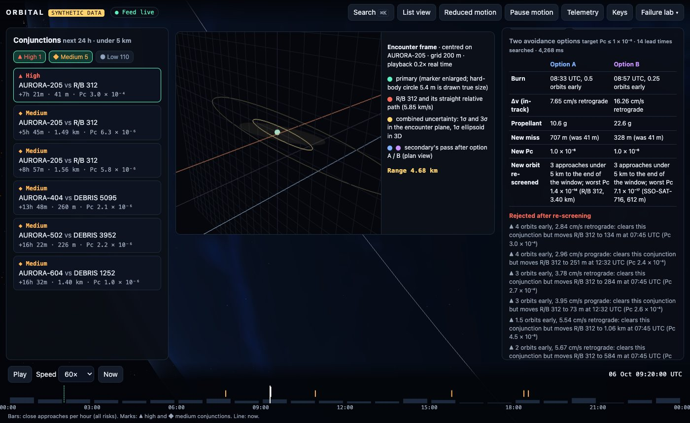
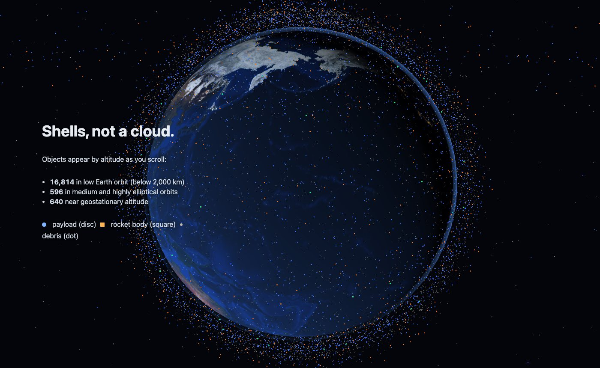
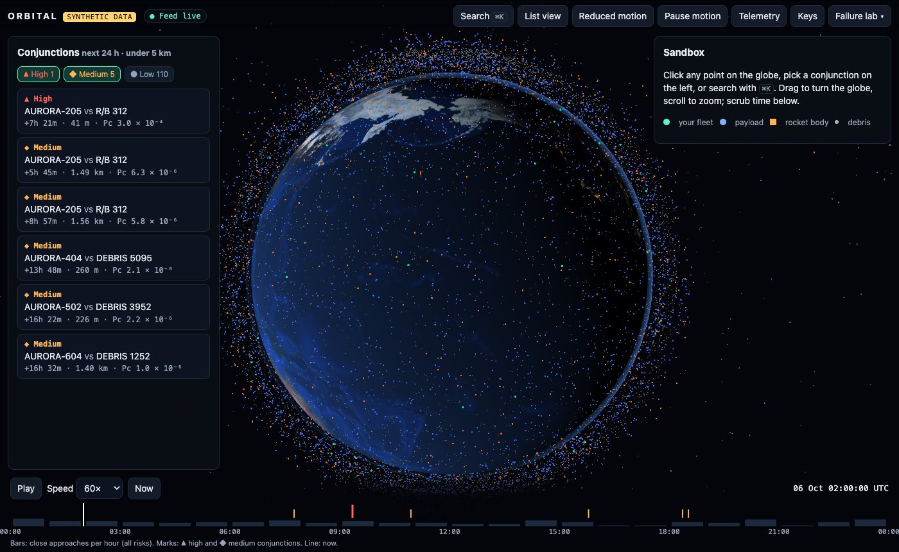

TypeScript · three.js · orbital mechanics · 2026-10
Which Burn Actually Makes the Satellite Safe?
A motion-first space-traffic sandbox: 18,050 synthetic objects propagated with SGP4 in your browser, a 24-hour conjunction screen of one operator's fleet, a 41 m close approach with Pc 3.0 × 10⁻⁴, and an avoidance planner that re-screens every candidate burn (8 of the 10 it checked would have moved a later pass with the same rocket body to 73–1,063 m).

Built from blueprint 01 of a written build book (Volume V, motion-first products) as one vertical slice. Everything is synthetic: the catalog, operators, orbits, covariances and conjunctions come from a generator in the repository; catalog numbers start at 70001 so none matches a real object. The only outside data are the SGP4 verification vectors published with Vallado et al. (AIAA 2006-6753), used as tests. Not built: real element sets, the ten-service split, Kafka, Redis, object storage, Terraform and cloud deployment, single sign-on, billing, residual-based anomaly detection, long-encounter Pc.
01 — The problem
A satellite operator gets a warning: one of their satellites and a spent rocket body will pass 41 m apart in seven hours, and the probability of collision is 3 in 10,000, above the 1 in 10,000 where operators usually act. The obvious fix is the smallest burn that clears it. Does the smallest burn leave the satellite safe, or does it just move the risk to another pass?
The build book's rule for this volume is that the public website is the product: motion has to show state, time and causality, and a visitor should understand the system by using it, not by watching a video. Blueprint 1 of ten, built as its demo scenario end to end.
02 — What I built
A Next.js site that runs entirely in the browser on synthetic fixtures, plus a Fastify API on PostgreSQL behind the same interface, started by one docker compose up.
- A synthetic catalog of 18,050 objects in realistic shells, with TLEs written to the column format, and three planted close approaches aimed by Newton iteration on the secondary's elements.
- SGP4 in a Web Worker (satellite.js WASM bulk propagator) for the whole catalog, interpolated on the GPU between samples.
- Conjunction screening: shell filter, a 60 s pass with straight-line relative motion, Brent's method on the exact distance.
- Collision probability in the encounter plane, checked against Monte Carlo.
- An avoidance planner that propagates burns with two-body + J2, then re-screens each candidate's new orbit against the catalog.
- A motion layer of deterministic state machines and clocked tweens, with reduced motion, pause, deep links, list view and a telemetry HUD.
03 — How it was built
- 01
A catalog with planted encounters
The generator writes 60 satellites for the demo operator at 550 km, a 1,600-satellite broadband constellation, sun-synchronous imagers, three old fragmentation clouds, 5,200 scattered debris, 800 rocket bodies, navigation, geostationary and Molniya-like orbits. For three of the fleet's satellites it re-aims an existing object so that SGP4 puts it at a chosen offset at a chosen time, by solving for the TLE's mean anomaly, node and mean motion. Aimed at 45 m, the high-risk pass lands at 41 m: the TLE's four-decimal angles are part of the function being solved.
const dx = solve(J, sub(target, pos(x))); // Newton step on [M0, RAAN, n] x = x.map((v, k) => v + dx[k]); // the TLE text itself is re-written and re-parsed each step - 02
SGP4 checked against the published vectors
All 33 verification cases from AIAA 2006-6753 agree within 1 m and 3 mm/s, and the paper's deliberate bad case is refused. One detail cost an hour: the Fortran and Matlab outputs in the same archive differ from the Java and C++ lineage by 960 m on object 23599 after 280 minutes (the Lyddane fix). satellite.js follows the C++ code, so the Java file is the reference.
- 03
Screening the fleet in nine seconds
60 satellites against 18,050 objects over 24 hours: a perigee/apogee filter leaves about 4,400 candidates per satellite, then every 60 s the screen asks, for each pair within 1,000 km, when straight-line relative motion would bring them closest. Only pairs whose nearest sample is within 7 km get Brent's method on the real SGP4 distance. 3.06 million pairs checked, 251 refined, 116 approaches under 5 km, in 9.4 s with WASM SGP4. Against a brute-force reference (5 s steps, no filter) on a 400-object subset, precision and recall are both 1.0.
- 04
Probability of collision, and how sure it is
Each object carries a synthetic uncertainty by class (an operator's own ephemeris 15/60/15 m radial/in-track/cross-track, debris 150/1,200/150 m) that grows with element age. The two covariances are combined, projected onto the plane perpendicular to the relative velocity, and integrated over the 5.4 m hard-body circle. For the high-risk pass that gives 3.0 × 10⁻⁴; four million Monte Carlo samples give 3.15 × 10⁻⁴. Of the 116 approaches, 1 is high risk (Pc ≥ 10⁻⁴), 5 medium, 110 low.
- 05
The smallest burn was the wrong answer
The planner tries seven lead times, prograde and retrograde, and bisects the burn size until Pc reaches 1 × 10⁻⁶. Then it re-screens each candidate's new orbit. The cheapest, 2.84 cm/s four orbits early, clears this conjunction and moves the 07:45 pass with the same rocket body from 1.49 km to 134 m (Pc 3.0 × 10⁻⁴): the two orbits meet every revolution, so shifting the satellite's timing changes every meeting. 8 of the 10 candidates checked failed like that. Screening the nominal orbit once with a 60 km volume, and re-checking only those passes, cut planning from 48 s to 5.0 s; a test shows it gives the same answer as the full re-screen.
const fast = maxDev < NEAR_KM - 6; // a few cm/s cannot move the orbit further than this in a day const found = fast ? recheck(nearPasses) : screenPath({ path, candidates, ... }); - 06
Motion that carries state
The store holds the product state; a small state machine decides which view follows an event, and the scene tweens the camera toward the target that view implies. Objects move on their real trajectories, the terminator is the Sun at the scene's time, and the encounter frame is drawn in metres with the uncertainty ellipses at true size. With reduced motion every transition is instant and the encounter shows its closest approach without travel; an e2e test walks the whole scenario that way. A list view carries every fact without WebGL.
- 07
The same product behind an API
The Docker stack serves the same site against a Fastify API: bearer tokens with roles, row-level security per operator, idempotency keys, a hash-chained audit log, rate limits, OpenAPI 3.1, OpenTelemetry spans and a WebSocket position feed. Alert e-mails land in a local mail sink. Two failures are built in and recover: the element-set feed going down (the last good catalog stays usable while the client backs off) and a lost GPU context.
04 — Results
The demo. The high-risk conjunction in the encounter frame, at closest approach (41 m, 5.85 km/s, combined 1σ 545 × 88 m):

The two offered burns and the ones rejected after re-screening:

| A | B | |
|---|---|---|
| Lead | 0.5 orbit | 0.25 orbit |
| Δv | 7.65 cm/s | 16.26 cm/s |
| New miss | 707 m | 328 m |
| Worst new | 3.40 km | 612 m |
The story's opening chapters, which hand over to the sandbox without a page change:


Checks. SGP4: 33 of 33 published cases within 1 m. Screening vs brute force: precision 1.0, recall 1.0. Pc vs Monte Carlo: within 4 standard errors on four geometries. Coverage of the domain and motion code: 98% of statements. API: every response validated against the OpenAPI document; another operator gets 404 on this operator's conjunctions, and row-level security blocks a query with no WHERE clause.
Performance. 60 FPS with a real GPU (p95 frame 17.7 ms, 7 draw calls). With 50,000 objects on software rendering, 15 FPS, a floor. The API on one process: 5,911 requests a second at p95 10.8 ms, and 10,000 WebSocket subscriptions held open, each receiving one update a second.
Watch the 2 min 12 s captioned recording of the whole scenario.
05 — What I'd do next
- Search lead times continuously and add radial burns, since the clean options found here are both late and the grid may be missing an early burn that also clears the 07:45 pass.
- Long-encounter Pc for the slow approaches (the slowest is 0.43 km/s), where the encounter-plane assumption is weakest.
- Covariance from tracking residuals instead of a class table, and a check of how often the 3σ ellipse contains the true miss.
- Split the API along its route groups once something needs to scale separately; the domain package already is the seam.